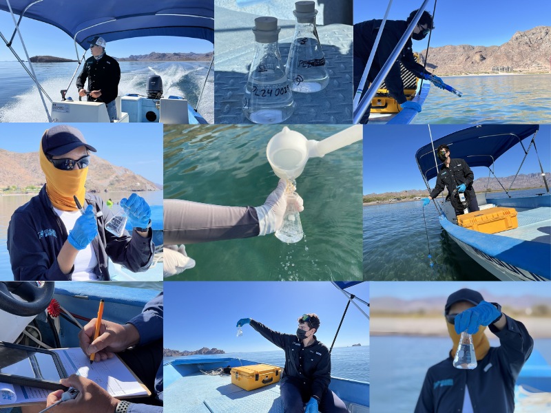

Eco-Alianza de Loreto Proyect
SEA WATER QUALITY MONITORING
We analyze, measure, and share
Discover the information gathered about water quality at the beaches of Loreto, B.C.S.
About
Who Are Us?
At Eco-Alianza de Loreto A.C., we work with passion for the conservation of the environment and the well-being of our community. Since our founding, we have promoted projects that protect Loreto's ecosystems by encouraging environmental education, citizen participation, and sustainable development.
Through various initiatives, we address the main environmental challenges of our region. Some of our most important projects include:
- Natural Resources Conservation
- Environmental Education
- Participatory Communities And Strategic Alliances
Learn about water quality and help protect it.
Explore the charts and learn about the water conditions at our beaches.
How do we do it?
Learn about our water quality monitoring process.
Commitment to Sea Water Quality
At Eco-Alianza de Loreto A.C., we established the Loreto CoastKeeper program in 2012 with the mission of protecting the water bodies and recreational beaches of Loreto. Our work is based on the collection and analysis of data to ensure the safety and sustainability of water in the region.
Since the beginning of the Loreto CoastKeeper program, we have provided a reliable scientific foundation regarding the impact of microbiological contamination (Enterococci) in the Bahía de Loreto National Park.
In addition, we offer a public health service to users of the protected natural area by sharing our results through our social media and the Swim Guide platform.

What Do We Measure in the Water?
Water Quality Monitoring involves the sampling, measurement, and recording of various characteristics of seawater. We evaluate key parameters that allow us to understand the state of the marine ecosystem, including:
- Temperature
- Dissolved Oxygen
- Salininity
- Electrical Conductivity
- pH
These data help us identify changes in water quality and potential risks to marine life and public health.

Bacteriological Analysis and Regulations
Our studies include the measurement of enterococci, bacteria indicators of fecal contamination. Their presence helps us determine whether the water is safe for recreational activities.
All of our analyses follow the guidelines of COFEPRIS, with the goal of ensuring that the beaches of Loreto are SUITABLE for primary contact, such as:
- Swim
- Fishing
- Recreational Activities

Playas Bajo Monitoreo
As part of the WaterKeeper Alliance, we conduct continuous monitoring at 12 of the most important beaches of the Bahía de Loreto National Park:
- El Oasis
- El Cárcamo
- La Dársena
- La Negrita
- La Salinita
- Nopoló
- Juncalito
- El Quemado
- Ligüi
- Ensenada Blanca
- Mil Palmas
- La Pícazon
Through these efforts, we aim to generate reliable information for the protection of these natural spaces.
Our Sea Water Quality Team
Discover who leads the Marine Water Quality Monitoring.

Priscila Conde
Program Coordinator
Mario Moreno
Laboratory ManagerAndre Garayzar
SamplerFrancisco Talamantes
Boat CaptainVisit Us Online
Learn more about Eco Alianza de Loreto and its projects